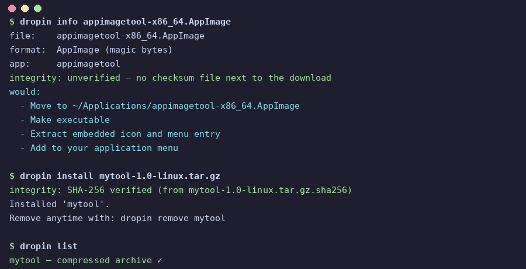

Formats
Whatever the download is, dropin knows what to do with it.
Every format gets the same treatment: install it in user scope, wire up a menu entry and launcher, and record every file it creates so removal is exact.
| You downloaded | What dropin does |
|---|---|
.AppImage | Moves to ~/Applications, makes it executable, pulls out the real icon and menu entry |
.deb | Extracts the payload to ~/.local/opt/<pkg> with a pure-Rust reader (no dpkg needed), adopts the bundled .desktop files with paths fixed up, links usr/bin/* into ~/.local/bin |
.rpm | Same treatment through a pure-Rust RPM/cpio reader. Works on Debian too, no rpm2cpio required |
.tar.gz / .tar.xz / .zip | Looks at what’s inside. Real app? Installed with a menu entry and bin links. Folder of vacation photos? Refused with an explanation instead of a broken “install” |
.flatpakref / .flatpak | Hands it to flatpak install --user |
.sh / .run / .bin | Tells you it’s an executable vendor script and won’t run it until you explicitly say so |
.exe / .msi | Auto-detects games vs apps. Games run with GE-Proton via umu-launcher. Apps run with Wine. Isolated prefix per app, tracked for clean removal |
.deb to .txt and dropin still knows what it’s looking at.Uninstalls
Uninstalls that actually undo.
Everything dropin creates — files, symlinks, menu entries, icons — is written to a SQLite database at ~/.local/share/dropin/ledger.db. Removing an app walks that list backwards and deletes exactly what was installed. Nothing orphaned, nothing guessed at.
AppImages get generations on top of that: each version lives in its own directory under ~/Applications/<app>/<version>/, with an active symlink pointing at the current one. Updates use a zsync delta where a channel exists, are SHA-1 verified, and dropin rollback flips active back instantly. Only the last two generations are kept.

$ dropin install coolapp-2.4-linux-x86_64.tar.gz Installed 'coolapp'. Remove anytime with: dropin remove coolapp $ dropin list coolapp — tar.gz archive
Installer scripts
Vendor scripts get treated like what they are: arbitrary code.
.sh, .run and .bin files can do anything to your machine, so dropin doesn’t just run them.
Audited first
Before anything runs, dropin scans the script and explains what it found in plain language: what it will install, whether it wants the internet, whether it touches system folders or asks for sudo.
Sandboxed
Scripts run under bubblewrap: no network unless you allow it, the system read-only, only your install folders writable, your SSH and GPG keys hidden. If bubblewrap isn’t installed, dropin refuses rather than running unsandboxed.
Fully logged
Every byte of installer output is logged to ~/.local/share/dropin/script-logs/.
Reversible
Before the script runs, dropin snapshots your writable folders with hardlinks. Removing the app later deletes what the installer added and restores what it changed or deleted.
Usage
Everything is one command.
dropin is a command-line tool. No GUI, no background service, no daemon.
$ dropin install <file> # shows the plan first; scripts need confirmation $ dropin info <file> # dry run: exactly what would happen, no changes $ dropin list # everything dropin installed $ dropin launch <name> # run an installed app $ dropin update [name|--all] # check for updates, on demand only $ dropin rollback <name> # restore an AppImage to its previous version $ dropin remove <name> # clean removal, reversed from the ledger $ dropin remove --purge <name> # also move leftover config/cache/data to the trash $ dropin doctor # health checks: broken menus, orphans, missing tools $ dropin track <name> --github owner/repo $ dropin adopt <dir> # add an already-installed game folder $ dropin setup-wine # install Wine automatically for Windows apps $ dropin setup-proton # install umu-launcher + GE-Proton for games
Principles
Four rules, no exceptions.
Your home is yours
Installs land in user scope and never ask for root unless you explicitly choose a system install.
Show before doing
dropin info always lays out the plan first. Installer scripts need your explicit okay.
Offline by default
No accounts, no telemetry, no background phoning home. Network access only happens for actions you start.
Honest about limits
If dropin can’t update something automatically, it says so instead of pretending.